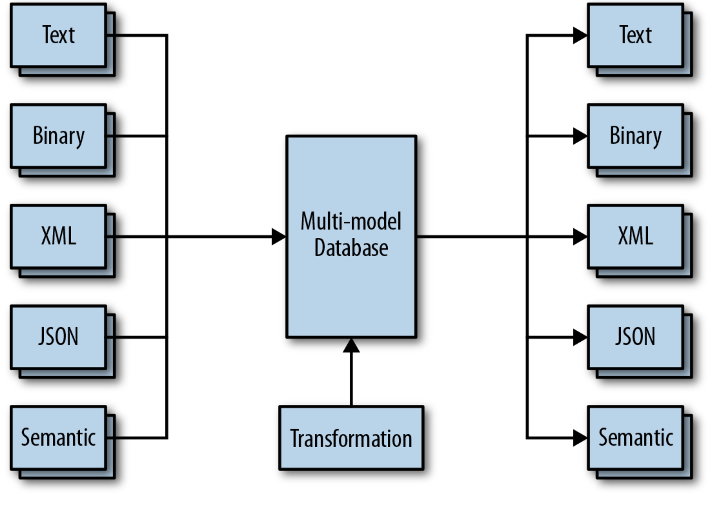

Keskendub andmete kasutamisele otsuste tegemiseks ja süsteemide optimeerimiseks
Arendusotsused põhinevad andmetel, mitte oletustel või intuitsioonil. Lähtudes andmetest on võimalik vähendada vigade ja tõrgete tekkimist.
Halbade või puudulike andmete kasutamine võib viia valede järeldusteni. Andmekaitse ja privaatsusega seotud probleemid. Andmete kogumine, puhastamine ja analüüsimine võib olla kulukas ja ajamahukas.
Adobe Analytics: Kasutatakse veebirakenduste ja kasutajate käitumise jälgimiseks. Näiteks, milliseid lehti külastatakse ja kui kaua kasutajad seal viibivad.
